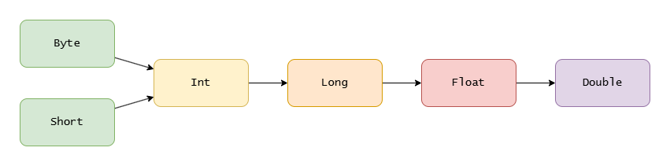

Capítulo 4: Tipos de datos básicos¶
Introducción¶
En los capítulos anteriores aprendiste a configurar el entorno de desarrollo y a escribir tu primer programa en Kotlin. También conociste conceptos fundamentales como las variables, las constantes y las convenciones de programación. Ahora es momento de profundizar en uno de los pilares de cualquier lenguaje de programación: los tipos de datos.
En este capítulo descubrirás qué son los tipos de datos y por qué son tan importantes para escribir programas correctos y seguros. Aprenderás cómo Kotlin identifica el tipo de una variable, cuándo conviene dejar que el compilador lo infiera automáticamente y en qué situaciones es preferible especificarlo de forma explícita. También conocerás qué ocurre cuando intentas utilizar un valor incompatible con el tipo de una variable y cómo el sistema de tipos de Kotlin ayuda a detectar este tipo de errores antes de ejecutar el programa.
Finalmente, estudiarás los principales tipos de datos básicos que ofrece Kotlin, incluyendo números, caracteres, valores booleanos y cadenas de texto. Comprenderás las características de cada uno de ellos y aprenderás a elegir el tipo más adecuado según la información que necesites representar en tus programas.
No te preocupes si algunos conceptos parecen similares a los vistos en el capítulo anterior. El objetivo de este capítulo es comprender con mayor profundidad cómo Kotlin representa y administra la información, ya que estos conocimientos serán esenciales para trabajar posteriormente con operadores, estructuras de control y otros elementos fundamentales del lenguaje.
Tipos de datos¶
¿Qué es un tipo de dato?¶
Todos sabemos que un número y un fragmento de texto son cosas muy diferentes. ¿Cómo lo sabemos? Pues bien, se pueden realizar operaciones aritméticas (como la multiplicación) con números, pero no con textos. Kotlin también lo sabe. Por eso, cada variable tiene un tipo que determina qué valores se pueden almacenar en ella y qué operaciones se pueden realizar.
Inferencia de tipos y tipo explícito¶
El tipo de una variable se establece al declararla:
En este caso, Kotlin sabe que text es una cadena y que n es un número. Kotlin determina los tipos de ambas variables automáticamente. Este mecanismo se denomina inferencia de tipos.
Así es como declaramos una variable dejando que Kotlin infiera el tipo:
También puedes especificar el tipo de una variable al declararla, escribiéndolo después de dos puntos:
Note
Ten en cuenta que el nombre del tipo siempre empieza por una letra mayúscula (Int, String, Boolean…).
Declaremos las mismas variables que en el ejemplo anterior y especifiquemos sus tipos:
El tipo Int significa que la variable almacena un número entero (0, 1, 2, ..., 100_000_000, ...). El tipo String significa que la variable almacena una cadena de caracteres ("Hola", "John Smith"). Más adelante aprenderás más sobre estos y otros tipos de datos.
En la práctica se utilizan ambas formas. Cuando usas la inferencia de tipos, tu código resulta más conciso y legible; pero en algunos casos conviene especificar el tipo. Por ejemplo, si necesitas declarar una variable e inicializarla más tarde, la inferencia no tiene con qué trabajar:
El ejemplo anterior es incorrecto porque Kotlin no puede inferir el tipo cuando la variable solo se declara, y toda variable debe tener un tipo. En cambio, el ejemplo siguiente sí funciona porque especificamos el tipo:
Incompatibilidad de tipos¶
Una de las funciones más importantes de los tipos de datos es evitar que se asigne un valor inadecuado a una variable. Echa un vistazo a este ejemplo de código que no funciona:
Por lo tanto, si ves un error de incompatibilidad de tipos, significa que has asignado algo inadecuado a una variable. El mismo problema se produce cuando intentas asignar un valor inadecuado a una variable mutable declarada con inferencia de tipos:
Tipos de datos básicos¶
En este tema aprenderemos sobre la clasificación y las propiedades de los tipos básicos en Kotlin. Es posible que ya conozcas algunos de ellos. Los tipos básicos se agrupan según su significado: los de un mismo grupo funcionan de manera similar, pero tienen tamaños diferentes y, por lo tanto, representan distintos rangos de valores.
Números enteros¶
Un número entero es un número sin parte decimal (0, 1, 2, -5, 100…). En la práctica, para guardar enteros casi siempre usarás el tipo Int, y ocasionalmente Long cuando el número sea muy grande.
¿Por qué existe más de un tipo para lo mismo? Porque cada uno ocupa un tamaño distinto en memoria y, por eso, admite un rango de valores diferente. Kotlin ofrece cuatro:
Byte: 8 bits (1 byte); rango de -128 a 127.Short: 16 bits (2 bytes); rango de -32 768 a 32 767.Int: 32 bits (4 bytes); rango de -2 147 483 648 a 2 147 483 647.Long: 64 bits (8 bytes); rango de -9 223 372 036 854 775 808 a 9 223 372 036 854 775 807.
El tamaño de cada tipo es fijo: no depende del sistema operativo ni del hardware.
En el día a día, Int cubre la gran mayoría de los casos. Si un número se sale de su rango, usa Long:
val zero = 0 // Int
val oneMillion = 1_000_000 // Int
val twoMillion = 2_000_000L // Long, por la etiqueta L
val bigNumber = 1_000_000_000_000_000 // Long: Kotlin lo elige porque no cabe en un Int
val ten: Long = 10 // Long, porque especificamos el tipo
val shortNumber: Short = 15 // Short, porque especificamos el tipo
val byteNumber: Byte = 15 // Byte, porque especificamos el tipo
Números decimales¶
Para números con parte decimal (3.14, -0.5, 100.0), Kotlin ofrece dos tipos de coma flotante: Double (64 bits) y Float (32 bits). Double es más preciso (unos 14-16 dígitos decimales frente a los 6-7 de Float) y es el que usarás casi siempre:
val pi = 3.1415 // Double
val e = 2.71828f // Float, por la etiqueta f
val fraction: Float = 1.51f // Float, porque especificamos el tipo
Tip
Regla práctica: para enteros usa Int y para decimales usa Double. Recurre a Long, Short, Byte o Float solo cuando tengas una razón concreta, como un número que no cabe en un Int.
Límites y tamaño de un tipo numérico¶
Si necesitas consultar desde el código el valor mínimo o máximo de un tipo numérico, escribe el nombre del tipo, un punto . y luego MIN_VALUE o MAX_VALUE:
println(Int.MIN_VALUE) // -2147483648
println(Int.MAX_VALUE) // 2147483647
println(Long.MIN_VALUE) // -9223372036854775808
println(Long.MAX_VALUE) // 9223372036854775807
También puedes obtener el tamaño de un tipo entero en bytes o bits (1 byte = 8 bits):
Caracteres¶
Kotlin cuenta con el tipo Char para representar caracteres alfabéticos (mayúsculas y minúsculas), dígitos y otros símbolos. Cada carácter se escribe entre comillas simples. Su tamaño es similar al del tipo Short (2 bytes = 16 bits):
val lowerCaseLetter = 'a'
val upperCaseLetter = 'Q'
val number = '1'
val space = ' '
val dollar = '$'
Los caracteres pueden representar símbolos de muchos alfabetos, incluidos jeroglíficos y algunos símbolos especiales, que veremos más adelante.
Booleanos¶
Kotlin ofrece un tipo denominado Boolean. Solo puede almacenar dos valores: true y false. Representa un único bit de información:
A menudo utilizaremos este tipo en instrucciones condicionales.
Cadenas de caracteres¶
El tipo String representa una secuencia de caracteres entre comillas dobles. Es uno de los tipos más habituales:
Conversión de tipos¶
La conversión de tipos, o type casting, consiste en cambiar un valor de un tipo de datos a otro. Esto resulta especialmente importante en Kotlin, ya que se trata de un lenguaje de tipado estático, lo que significa que los tipos se identifican y se aplican de forma estricta en tiempo de compilación.
Conversión entre tipos numéricos¶
Los tres tipos numéricos más comunes son: Int, Long y Double. En ocasiones necesitarás asignar un valor de un tipo numérico a una variable de otro tipo. Para eso, llamas a una función especial de conversión, por ejemplo toInt(), toLong(), toDouble(), etc.
Imagina que tienes una variable llamada num, de tipo Int, y quieres pasarla a una función sqrt() que calcula la raíz cuadrada. Esa función requiere un valor Double, no Int, por lo que debes convertirlo con toDouble() para evitar un error de incompatibilidad:
val num: Int = 100
val res: Double = sqrt(num.toDouble())
println(res) // 10.0
println(num) // 100, no se modifica
En el ejemplo anterior, los tipos de las variables se han especificado para simplificar la explicación.
Note
toDouble() no modifica el tipo de la variable. Esta función genera un nuevo valor de tipo Double.
Ten en cuenta que debes realizar estas conversiones incluso cuando el tipo de destino sea mayor que el de origen. Por ejemplo, para pasar de Int a Long. Esto distingue a Kotlin de otros lenguajes como Java y C#, que permiten asignar números de un tipo menor a variables de un tipo mayor sin acciones adicionales:
Char no es un tipo numérico, pero puedes convertir un número en un carácter y viceversa según el código del carácter (un número entero que puedes consultar en la tabla Unicode):
Conversión a Short y Byte¶
Los tipos Short y Byte se usan muy poco; si necesitas guardar un entero, lo normal es Int. Aun así, veamos cómo convertir a ellos, porque hay un detalle importante.
Existen las funciones toShort() y toByte(), pero evita aplicarlas directamente sobre un Double o un Float: desde Kotlin 1.4 esa conversión quedó obsoleta (y ya se eliminó en las versiones actuales), porque puede dar resultados inesperados debido al menor tamaño de estos tipos.
La forma correcta es convertir primero a Int y, desde ahí, a Short o Byte:
Conversión a cadena¶
A veces necesitas obtener la representación en forma de cadena de un valor de otro tipo. Kotlin ofrece la función toString() para ello, que puede convertir un valor de cualquier tipo en una cadena:
val n = 8 // Int
val d = 10.09 // Double
val c = '@' // Char
val b = true // Boolean
val s1 = n.toString() // "8"
val s2 = d.toString() // "10.09"
val s3 = c.toString() // "@"
val s4 = b.toString() // "true"
Una cadena se puede convertir en un número o incluso en un valor booleano, pero no en un solo carácter:
val n = "8".toInt() // Int
val d = "10.09".toDouble() // Double
val b = "true".toBoolean() // Boolean
Si la representación en forma de cadena tiene un formato no válido, se producirá un error y el programa se detendrá, a menos que se tomen medidas especiales. Hablaremos de ellas más adelante.
Sin embargo, al convertir una cadena en un valor booleano no se produce ningún error. Si la cadena es "true" (sin distinguir mayúsculas y minúsculas), se obtiene true; en caso contrario, false:
val b1 = "false".toBoolean() // false
val b2 = "tru".toBoolean() // false
val b3 = "true".toBoolean() // true
val b4 = "TRUE".toBoolean() // true
Problemas con la conversión de tipos¶
Si tienes un valor de tipo flotante, por ejemplo un Double, puedes convertirlo a un tipo entero como Int o Long. Veamos qué ocurre:
Como puedes ver, la parte fraccionaria simplemente se descarta. Obtienes un resultado, pero pierdes precisión. ¡Ten cuidado con esta conversión!
Puede surgir otro problema al convertir un número de un tipo más grande a uno más pequeño (de Long o Double a Int). Si los valores son pequeños, funciona bien:
val d: Double = 10.2
val n: Long = 15
val res1: Int = d.toInt() // 10
val res2: Int = n.toInt() // 15
Sin embargo, esta conversión puede truncar el valor, ya que Long y Double pueden almacenar números mayores que los que cabe en un Int:
Como resultado, obtenemos un valor truncado. Este problema se conoce como desbordamiento de tipo (overflow). Lo mismo puede ocurrir al convertir un Int a Short o Byte. Por lo tanto, si conviertes un valor de un tipo mayor a uno menor, asegúrate de que el truncamiento no afecte al funcionamiento de tu programa.
Demostración¶
El programa siguiente ilustra las funciones que vimos. Lee la representación en forma de cadena de un número, la convierte a varios tipos diferentes y muestra los resultados:
fun main() {
val something = readln()
val d = something.toDouble()
val f = d.toFloat()
val i = f.toInt()
val b = i.toByte()
println(d)
println(f)
println(i)
println(b)
println(something.toBoolean())
}
Imagina que tenemos los siguientes datos de entrada:
El programa mostrará el siguiente resultado:
Analicémoslo con más detalle. El número representado por la cadena se convierte correctamente a Double, ya que tiene un formato adecuado. A continuación se convierte a Float, y aquí hay una pérdida, porque este tipo almacena menos decimales. La conversión a Int elimina la parte fraccionaria. El número 1000 es mayor de lo que puede almacenar un Byte (de -128 a 127), por lo que se produce un desbordamiento de tipo (-24). Y el resultado de convertir la cadena a Boolean es false, porque el valor no es "true".
Cuando se encuentran tipos diferentes: la coerción de tipos¶
Ya sabes cómo realizar una conversión de tipos de forma manual. Pero surge una pregunta: sabes que no puedes asignar directamente un Int a una variable Long… ¿qué ocurre entonces si calculamos la suma de un Int y un Long? En ese caso, el tipo se deduce del contexto.
Coerción de tipos¶
En estos casos, el compilador convierte automáticamente todos los operandos (esto se denomina coerción de tipos) y el resultado al tipo más amplio de la expresión. La imagen siguiente ilustra la dirección de esta conversión:

Como el tipo del resultado es más amplio que el de los operandos, no se produce ninguna pérdida de información.
Note
La coerción de tipos es poco habitual en Kotlin. Solo funciona con números y cadenas.
Ejemplos¶
La teoría parece bastante clara, así que veamos algunos ejemplos.
- De
IntaLong:
Aunque result es simplemente 1100, se trata de la suma de un Long y un Int, por lo que el tipo se convierte automáticamente a Long. Si intentaras declarar el resultado como Int, obtendrías un error, porque no se puede asignar un Long a una variable Int.
- De
LongaDouble:
val bigNum: Long = 100000
val doubleNum: Double = 0.0
val bigFraction = bigNum - doubleNum // 100000.0, Double
Los tipos Short y Byte son una excepción¶
Vimos que el resultado de una expresión con variables de distintos tipos se convierte al tipo más amplio. Sin embargo, Byte y Short son una excepción: si operas con ellos, el resultado será de tipo Int:
ByteyByte:
ShortyShort:
ShortyByte:
Entonces, ¿qué hacemos si queremos sumar dos variables Byte y obtener un resultado Byte? En ese caso, hay que convertir el resultado manualmente:
Important
Recuerda que un Byte solo puede almacenar valores en el rango de -128 a 127.
Echa un vistazo al siguiente ejemplo para ver cómo se produce el desbordamiento de tipo:
Resumen¶
En este capítulo profundizaste en cómo Kotlin representa la información:
- Cada valor tiene un tipo, que Kotlin puede inferir o que puedes indicar de forma explícita.
- Para enteros, usa
Int(yLongpara números muy grandes); para decimales,Double. - La conversión de tipos se hace con funciones como
toInt(),toDouble()otoString(), y hay que hacerla siempre, incluso hacia tipos más grandes. - Convertir de un tipo mayor a uno menor puede truncar el valor (desbordamiento).
- En una expresión con tipos distintos, Kotlin aplica la coerción hacia el tipo más amplio (con
ByteyShortcomo excepción, que pasan aInt).